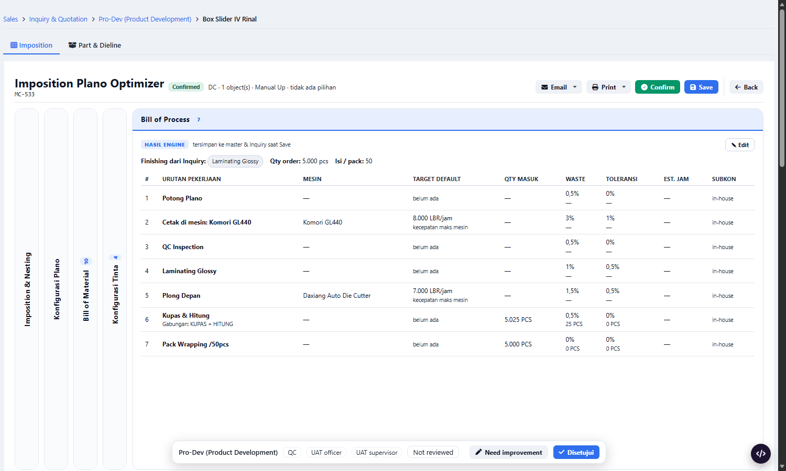
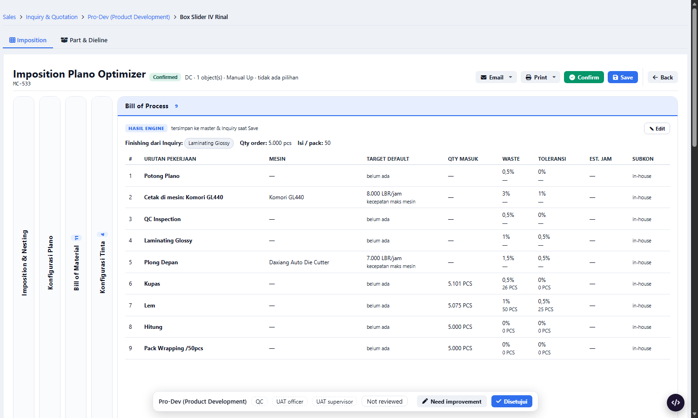
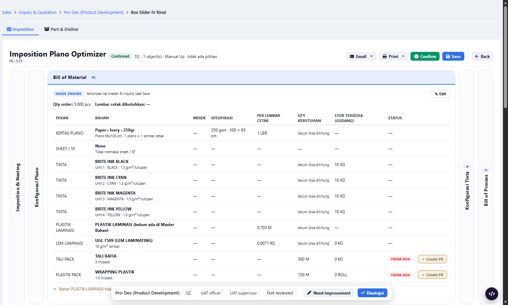
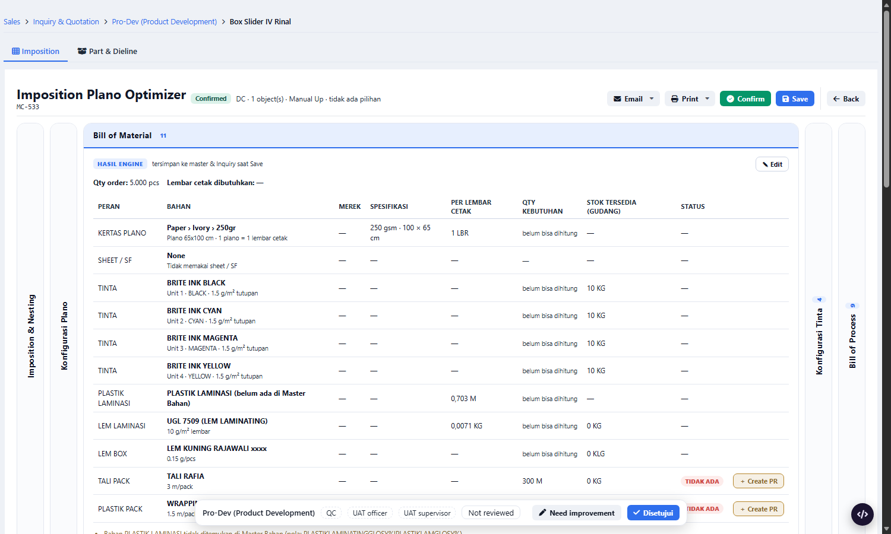

prod_part.joint_type (teks) kosong di 35 dari 35 part dari Inquiry. Engine hanya membaca teks ini untuk penanda NEEDS_GLUE (SpecEngine.php:95).join_type_id (iqp_part dan prod_part, nilainya sama): 8 part terisi (3 Glue Single, 5 Glue Double). Engine tidak pernah membacanya.prod_bop_rule yang bersyarat NEEDS_GLUE tidak pernah jalan: langkah Lem (aturan 15) dan bahan LEM BOX (aturan 24).



| Item | Sekarang | Sesudah |
|---|---|---|
| Jumlah langkah BOP | 7 | 9 |
| Langkah 6-8 | 6 Kupas & Hitung (gabungan) | 6 Kupas, 7 Lem, 8 Hitung. Kupas dan Hitung terpisah karena Lem berada di antaranya. |
| Qty masuk Kupas | 5.025 PCS | 5.101 PCS (waste dan toleransi Lem 1% dan 0,5% mengalir ke langkah sebelumnya) |
| Qty masuk Lem | - | 5.075 PCS, waste 1% (50 PCS), toleransi 0,5% (25 PCS) |
| Proses master Lem | - | LEM MESIN (prod_process id 4, sudah ada di aturan 15) |
| BOM baris baru | - | LEM BOX, LEM KUNING RAJAWALI xxxx, 0,15 g/pcs. Kolom Qty tampil "belum bisa dihitung" karena layout belum ada (celah lain, sama seperti baris bahan lain di layar ini). |
SpecEngine::generate menentukan penanda NEEDS_GLUE.tm2sdi.iqp_part.join_type_id (bila kosong: tm2mst.prod_part.join_type_id) lalu tm2mst.mat_join_type.code. Hanya baca.NEEDS_GLUE = GLUE_JOINT(prod_part.joint_type teks) ATAU code berawalan "GLUE_". Kode STITCHING_* tidak melem. Part tanpa Joint Type: hasil sama seperti sekarang.tm2mst.prod_part_process + tm2sdi.iqp_part_process; BOM ke tm2mst.prod_part_material + tm2sdi.iqp_part_material (source=ENGINE). Baris OVERRIDE/MANUAL officer tidak ditimpa. Part yang sudah tersimpan baru berubah bila officer menyimpan ulang.app/Services/ProDev/SpecEngine.php (zona beku, butuh izin). Setelah disetujui: diterapkan juga di tmerp.test, REMARK dan SCREEN-INDEX diperbarui, tes SpecEngine ditambah (Glue Single, Glue Double, Stitching, kosong).join_type_id/mat_join_type di app/: dipakai Inquiry, Master Card, ProductMasterSync, rakitan. Tidak ada pembaca di SpecEngine.NEEDS_GLUE/MULTI_LAYER di app/: hanya SpecEngine.php:94-95.prod_part.sys_help_topic, md:library, DB tmerp (tm2*).SpecEngine::generate yang joint-nya diteruskan di memori. Tidak ada kode terpasang, tidak ada Save, tidak ada data ditulis.